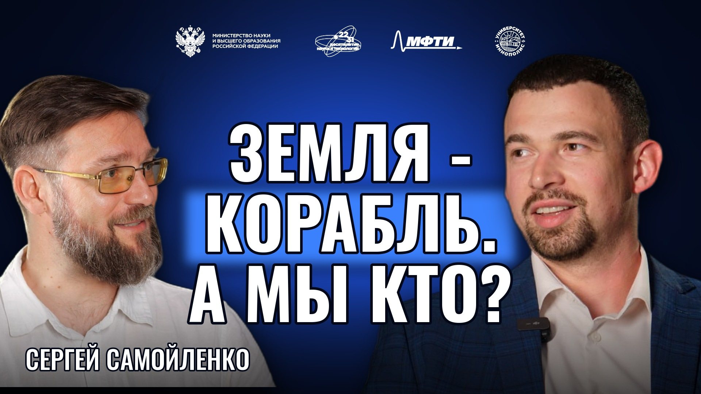

Сергей Самойленко
Вулканолог, физик, популяризатор науки

01О герое
Сергей Самойленко — российский физик и вулканолог, исследователь вулканических процессов и популяризатор науки. Работал в Институте вулканологии и сейсмологии ДВО РАН на Камчатке; в 2017 году основал музей вулканов «Вулканариум» в Петропавловске-Камчатском. Развивает научно-просветительские проекты и программы для школьников.
02Ключевые тезисы
- Вулканология — наука не о вулканах, а о Земле, на которой они есть. Вулкан без планеты — первый курс.
- Узнать, чтобы увидеть: пока не знаешь, на что смотришь, застывшие процессы не видны.
- Человек на Земле может быть пассажиром или командой корабля — разница видна, когда что-то идёт не так.
- В Вулканариум лучше прийти в середине маршрута по Камчатке, когда вопросы уже накопились.
- Вопрос «зачем мне это» держит учёного в науке; философию стоит вводить с первого курса.
- Искусственный интеллект хорош, если делает сильнее, а не позволяет чего-то не знать.
03Возьми с собой
Что применить
Перед поездкой ответь себе: зачем я туда еду и что хочу увидеть.
В музее спроси сотрудника не про экспонат, а про него самого: как он здесь оказался.
Проверь последний запрос к нейросети: он сделал тебя сильнее или позволил чего-то не знать?
Цитаты
Вулканология — это наука не о вулканах, это наука о Земле, на которой есть вулканы.
— Сергей Самойленко
Не советую никому лезть на Ключевской, если вам до зарезу не надо.
— Сергей Самойленко
Если он делает меня сильнее, а не слабее, то значит я делаю все правильно.
— Сергей Самойленко